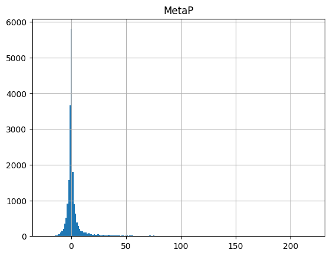
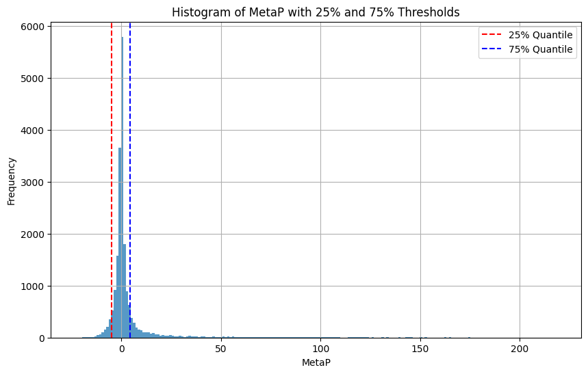

import pandas as pd
import matplotlib.pyplot as pltGet top-regulated genes for Reactome Gene list analysis
df = pd.read_csv('pdcd1.csv')df.head()| Gene | MetaP | |
|---|---|---|
| 0 | A1BG | 0.508638 |
| 1 | A1CF | -2.657577 |
| 2 | A2M | 11.769551 |
| 3 | A2ML1 | 0.148742 |
| 4 | A3GALT2 | 0.173925 |
df.hist(bins=200);
# quantile
q_lo = 0.05
q_hi = 0.85# Finding the 25th and 75th quantiles
thr_lo = df['MetaP'].quantile(0.05)
thr_hi = df['MetaP'].quantile(0.85)thr_lo, thr_hi # treshold(-4.958607315, 4.620712928299987)# Getting top 25% and bottom 25% data
hi = df[df['MetaP'] >= thr_hi]
lo = df[df['MetaP'] <= thr_lo]# Plotting histogram
ax = df['MetaP'].hist(bins=200, alpha=0.75, figsize=(10, 6))
ax.set_title('Histogram of MetaP with 25% and 75% Thresholds')
ax.set_xlabel('MetaP')
ax.set_ylabel('Frequency')
# Drawing threshold lines for 25% and 75% quantiles
ax.axvline(thr_lo, color='r', linestyle='--', label='25% Quantile')
ax.axvline(thr_hi, color='b', linestyle='--', label='75% Quantile')
# Adding legend
ax.legend()
# Show plot
plt.show()
hi| Gene | MetaP | |
|---|---|---|
| 2 | A2M | 11.769551 |
| 9 | ABCA1 | 9.050610 |
| 17 | ABCA6 | 12.000000 |
| 18 | ABCA7 | 23.568636 |
| 20 | ABCA9 | 10.004365 |
| ... | ... | ... |
| 19622 | ZNF746 | 6.229148 |
| 19637 | ZNF804A | 38.508638 |
| 19651 | ZNF831 | 159.853872 |
| 19662 | ZPLD1 | 4.853872 |
| 19667 | ZRSR2 | 5.698970 |
2954 rows × 2 columns
hi.shape(2954, 2)lo.shape(989, 2)df.shape(19694, 2)hi.to_csv('hi_pdcd1.csv',index=False)
lo.to_csv('lo_pdcd1.csv',index=False)